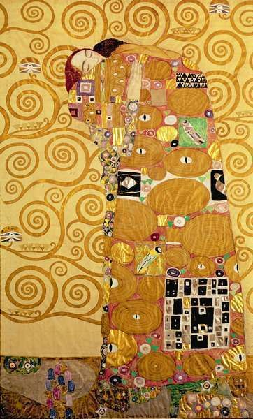
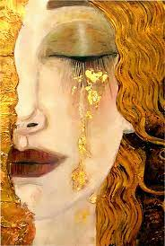
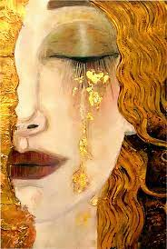
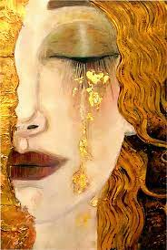

Gustav Klimt: Beleza, Ouro e Simbolismo
Uma das características mais marcantes da arte de Klimt é o uso abundante de folhas de ouro. Ele empregava essa técnica para criar uma atmosfera opulenta e dar destaque aos seus temas, especialmente em retratos femininos. O uso do ouro simboliza a divindade, a perfeição e a espiritualidade. Além disso, Klimt explorou a dualidade entre a beleza e a transitoriedade da vida humana, utilizando contrastes entre o brilho dourado e as áreas mais escuras e sombrias.

 

